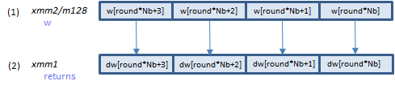

(from FIPS 197)
As for AES cipher, FIPS 197 issued by the government agency of the United States, is the original specification.
(from FIPS 197)
The state array is a 2-dimensional array of 4 * 4 bytes. The 16-byte plaintext is put here, and processed by repeating the procedure called "round", to generate the ciphertext. Rounds are repeated for Nr times.
(from FIPS 197)
AESNI instructions handle the whole state array in one XMMWORD.
Note that no byte-order swapping (endian conversion) required for using AESNI instructions.
The w array is a one-dimensional array of 4 * (Nr + 1) words. (An AES "word" is 32-bit). Before encryption, the Nk-word cipher key must be expanded to the w array by the procedure called KeyExpansion. In each round, 4 words of the w array are consumed. Before the rounds, 4 words are consumed in pre-processing, so 4 * (Nr + 1) words are required.
AESNI instructions handle 4 words of the w array (for one round) in one XMMWORD.
The following is the AES encryption algorithm defined in FIPS 197. AESNI instructions do A and B. C is just an XOR operation, so PXOR can do it.
AESENC xmm1, xmm2/m128 (AESNI
__m128i _mm_aesenc_si128(__m128i state, __m128i w);
AESENCLAST xmm1, xmm2/m128 (AESNI
__m128i _mm_aesenclast_si128(__m128i state, __m128i w);
VAESENC xmm1, xmm2, xmm3/m128 (AESNI+(V1
VAESENCLAST xmm1, xmm2, xmm3/m128 (AESNI+(V1
VAESENC ymm1, ymm2, ymm3/m256 (VAES
__m256i _mm256_aesenc_epi128(__m256i state, __m256i w);
VAESENCLAST ymm1, ymm2, ymm3/m256 (VAES
__m256i _mm256_aesenclast_epi128(__m256i state, __m256i w);
VAESENC zmm1, zmm2, zmm3/m512 (VAES+(V5
__m512i _mm512_aesenc_epi128(__m512i state, __m512i w);
VAESENCLAST zmm1, zmm2, zmm3/m512 (VAES+(V5
__m512i _mm512_aesenclast_epi128(__m512i state, __m512i w);

AESENC instruction processes A above (one round).
B is the last round. AESENCLAST instruction processes this round.
Inputs: (1) = the state array before the round, (2) = the w array elements for the round.
Output: (3) = the state array after the round
Before the encryption, the w array must be generated by the KeyExpansion procedure defined in FIPS 197 as following.
Rcon is an array of constants calculated by the method defined in FIPS 197. The values are as following.
static const BYTE Rcon[] = {
0x8d, 0x01, 0x02, 0x04, 0x08, 0x10,
0x20, 0x40, 0x80, 0x1b, 0x36, 0x6c, 0xd8, 0xab, 0x4d, 0x9a,
};
Only elements [1] to [10] are actually used in the AES cipher.
Note that no byte-order swapping required when copying the key to the w array.
AESKEYGENASSIST xmm1, xmm2/m128, imm8 (AESNI
VAESKEYGENASSIST xmm1, xmm2/m128, imm8 (AESNI+(V1
__m128i _mm_aeskeygenassist_si128(__m128i temp, const int Rcon);
AESKEYGENASSIST instruction calculates the values of A and B expressions.
Inputs: (1) = value of temp, (2) = Rcon[i / Nk]
Output: (3) = the values calculated
FIPS 197 defines 2 algorithms of the AES decryption: InvCipher and EqInvCipher. Both algorithms produce the same result, but only the latter is supported by AESNI instructions.
EqInvCipher uses the dw array, which is generated from the w array with some additional procedure. How to generate the dw array is described later.
AESDEC xmm1, xmm2/m128 (AESNI
__m128i _mm_aesdec_si128(__m128i state, __m128i dw);
AESDECLAST xmm1, xmm2/m128 (AESNI
__m128i _mm_aesdeclast_si128(__m128i state, __m128i dw);

VAESDEC xmm1, xmm2, xmm3/m128 (AESNI+(V1
VAESDECLAST xmm1, xmm2, xmm3/m128 (AESNI+(V1
VAESDEC ymm1, ymm2, ymm3/m256 (VAES
__m256i _mm256_aesdec_epi128(__m256i state, __m256i dw);
VAESDECLAST ymm1, ymm2, ymm3/m256 (VAES
__m256i _mm256_aesdeclast_epi128(__m256i state, __m256i dw);
VAESDEC zmm1, zmm2, zmm3/m512 (VAES+(V5
__m512i _mm512_aesdec_epi128(__m512i state, __m512i dw);
VAESDECLAST zmm1, zmm2, zmm3/m512 (VAES+(V5
__m512i _mm512_aesdeclast_epi128(__m512i state, __m512i dw);
AESDEC instruction processes A above (one round).
B is the last round. AESDECLAST instruction processes this round.
Inputs: (1) = the state array before the round, (2) = the dw array elements for the round.
Output: (3) = the state array after the round
The dw array for EqInvCipher is generated from the w array with the following additional process.
AESIMC xmm1, xmm2/m128 (AESNI
VAESIMC xmm1, xmm2/m128 (AESNI+(V1
__m128i _mm_aesimc_si128(__m128i w);

AESIMC instruction processes the InvMixColumns() function above.
Input: (1) = the w array elements.
Output: (2) = the dw array elements.
AES-128 AES-192 AES-256
#pragma once
#include <intrin.h>
class AES128_NI
{
public:
// AES128
static const int Nk = 4;
static const int Nb = 4;
static const int Nr = 10;
protected:
__m128i w128[Nr + 1];
__m128i dw128[Nr + 1];
bool decrypting;
public:
AES128_NI(const unsigned char key[4 * Nk], bool decrypting)
: decrypting(decrypting)
{
KeyExpansion(key);
}
void Cipher(const unsigned char in[4 * Nb], unsigned char out[4 * Nb]);
void EqInvCipher(const unsigned char in[4 * Nb], unsigned char out[4 * Nb]);
protected:
void KeyExpansion(const unsigned char key[4 * Nk]);
};
#include "AES128_NI.h" //Cipher(byte in[4*Nb], byte out[4*Nb], word w[Nb*(Nr+1)]) //begin void AES128_NI::Cipher(const unsigned char in[4 * Nb], unsigned char out[4 * Nb]) { // ASSERT(!decrypting); //state = in __m128i state = _mm_loadu_si128(reinterpret_cast<const __m128i *>(in)); //AddRoundKey(state, w[0, Nb-1]) // just XOR state = _mm_xor_si128(state, w128[0]); //for round = 1 step 1 to Nr-1 //SubBytes(state) //ShiftRows(state) //MixColumns(state) //AddRoundKey(state, w[round*Nb, (round+1)*Nb-1]) //end for state = _mm_aesenc_si128(state, w128[1]); state = _mm_aesenc_si128(state, w128[2]); state = _mm_aesenc_si128(state, w128[3]); state = _mm_aesenc_si128(state, w128[4]); state = _mm_aesenc_si128(state, w128[5]); state = _mm_aesenc_si128(state, w128[6]); state = _mm_aesenc_si128(state, w128[7]); state = _mm_aesenc_si128(state, w128[8]); state = _mm_aesenc_si128(state, w128[9]); // The last round //SubBytes(state) //ShiftRows(state) //AddRoundKey(state, w[Nr*Nb, (Nr+1)*Nb-1]) state = _mm_aesenclast_si128(state, w128[Nr]); //out = state _mm_storeu_si128(reinterpret_cast<__m128i *>(out), state); //end } //EqInvCipher(byte in[4*Nb], byte out[4*Nb], word dw[Nb*(Nr+1)]) //begin void AES128_NI::EqInvCipher(const unsigned char in[4 * Nb], unsigned char out[4 * Nb]) { // ASSERT(decrypting); //byte state[4,Nb] //state = in __m128i state = _mm_loadu_si128(reinterpret_cast<const __m128i *>(in)); //AddRoundKey(state, dw[Nr*Nb, (Nr+1)*Nb-1]) state = _mm_xor_si128(state, w128[Nr]); //for round = Nr-1 step -1 downto 1 //InvSubBytes(state) //InvShiftRows(state) //InvMixColumns(state) //AddRoundKey(state, dw[round*Nb, (round+1)*Nb-1]) //end for state = _mm_aesdec_si128(state, dw128[9]); state = _mm_aesdec_si128(state, dw128[8]); state = _mm_aesdec_si128(state, dw128[7]); state = _mm_aesdec_si128(state, dw128[6]); state = _mm_aesdec_si128(state, dw128[5]); state = _mm_aesdec_si128(state, dw128[4]); state = _mm_aesdec_si128(state, dw128[3]); state = _mm_aesdec_si128(state, dw128[2]); state = _mm_aesdec_si128(state, dw128[1]); //InvSubBytes(state) //InvShiftRows(state) //AddRoundKey(state, dw[0, Nb-1]) state = _mm_aesdeclast_si128(state, dw128[0]); //out = state _mm_storeu_si128(reinterpret_cast<__m128i *>(out), state); //end } //static const BYTE Rcon[] = { // 0x8d, 0x01, 0x02, 0x04, 0x08, 0x10, 0x20, 0x40, 0x80, 0x1b, 0x36, 0x6c, 0xd8, 0xab, 0x4d, 0x9a, //}; //KeyExpansion(byte key[4*Nk], word w[Nb*(Nr+1)], Nk) //begin void AES128_NI::KeyExpansion(const unsigned char key[4 * Nk]) { //word temp //i = 0 //while (i < Nk) //w[i] = word(key[4*i], key[4*i+1], key[4*i+2], key[4*i+3]) //i = i+1 //end while __m128i work = _mm_loadu_si128(reinterpret_cast<const __m128i*>(key)); // work = w3 : w2 : w1 : w0 w128[0] = work; //i = Nk //while (i < Nb * (Nr+1)] //temp = w[i-1] //if (i mod Nk = 0) //temp = SubWord(RotWord(temp)) xor Rcon[i/Nk] //else if (Nk > 6 and i mod Nk = 4) //temp = SubWord(temp) //end if //w[i] = w[i-Nk] xor temp //i = i + 1 //end while __m128i t, t2; // f(w) = SubWord(RotWord(w)) xor Rcon // work = w3 : w2 : w1 : w0 // w4 = w0^f(w3) // w5 = w1^w4 = w1^w0^f(w3) // w6 = w2^w5 = w2^w1^w0^f(w3) // w7 = w3^w6 = w3^w2^w1^w0^f(w3) #define EXPAND(n, RCON) \ t = _mm_slli_si128(work, 4); /* t = w2 : w1 : w0 : 0 */\ t = _mm_xor_si128(work, t); /* t = w3^w2 : w2^w1 : w1^w0 : w0 */\ t2 = _mm_slli_si128(t, 8); /* t2 = w1^w0 : w0 : 0 : 0 */\ t = _mm_xor_si128(t, t2); /* t = w3^w2^w1^w0 : w2^w1^w0 : w1^w0 : w0 */\ work = _mm_aeskeygenassist_si128(work, RCON); /* work = f(w3) : - : - : - */ \ work = _mm_shuffle_epi32(work, 0xFF);/*work = f(w3) : f(w3) : f(w3) ; f(w3) */\ work = _mm_xor_si128(t, work); /* work = w3^w2^w1^w0^f(w3) : w2^w1^w0^f(w3) : w1^w0^f(w3) : w0^f(w3) */\ w128[n] = work; /* work = w7 : w6 : w5 : w4 */ EXPAND(1, 0x01); // Go on... EXPAND(2, 0x02); EXPAND(3, 0x04); EXPAND(4, 0x08); EXPAND(5, 0x10); EXPAND(6, 0x20); EXPAND(7, 0x40); EXPAND(8, 0x80); EXPAND(9, 0x1b); EXPAND(10, 0x36); // Additional process for EqInvCipher if (decrypting) { //for i = 0 step 1 to (Nr+1)*Nb-1 //dw[i] = w[i] //end for dw128[0] = w128[0]; //for round = 1 step 1 to Nr-1 //InvMixColumns(dw[round*Nb, (round+1)*Nb-1]) //end for dw128[1] = _mm_aesimc_si128(w128[1]); dw128[2] = _mm_aesimc_si128(w128[2]); dw128[3] = _mm_aesimc_si128(w128[3]); dw128[4] = _mm_aesimc_si128(w128[4]); dw128[5] = _mm_aesimc_si128(w128[5]); dw128[6] = _mm_aesimc_si128(w128[6]); dw128[7] = _mm_aesimc_si128(w128[7]); dw128[8] = _mm_aesimc_si128(w128[8]); dw128[9] = _mm_aesimc_si128(w128[9]); dw128[Nr] = w128[Nr]; } //end }
#pragma once
#include <intrin.h>
class AES192_NI
{
public:
// AES192
static const int Nk = 6;
static const int Nb = 4;
static const int Nr = 12;
protected:
__m128i w128[Nr + 1];
__m128i dw128[Nr + 1];
bool decrypting;
public:
AES192_NI(const unsigned char key[4 * Nk], bool decrypting)
: decrypting(decrypting)
{
KeyExpansion(key);
}
void Cipher(const unsigned char in[4 * Nb], unsigned char out[4 * Nb]);
void EqInvCipher(const unsigned char in[4 * Nb], unsigned char out[4 * Nb]);
protected:
void KeyExpansion(const unsigned char key[4 * Nk]);
};
#include "AES192_NI.h" //Cipher(byte in[4*Nb], byte out[4*Nb], word w[Nb*(Nr+1)]) //begin void AES192_NI::Cipher(const unsigned char in[4 * Nb], unsigned char out[4 * Nb]) { // ASSERT(!decrypting); //state = in __m128i state = _mm_loadu_si128(reinterpret_cast<const __m128i*>(in)); //AddRoundKey(state, w[0, Nb-1]) // just XOR state = _mm_xor_si128(state, w128[0]); //for round = 1 step 1 to Nr-1 //SubBytes(state) //ShiftRows(state) //MixColumns(state) //AddRoundKey(state, w[round*Nb, (round+1)*Nb-1]) //end for state = _mm_aesenc_si128(state, w128[1]); state = _mm_aesenc_si128(state, w128[2]); state = _mm_aesenc_si128(state, w128[3]); state = _mm_aesenc_si128(state, w128[4]); state = _mm_aesenc_si128(state, w128[5]); state = _mm_aesenc_si128(state, w128[6]); state = _mm_aesenc_si128(state, w128[7]); state = _mm_aesenc_si128(state, w128[8]); state = _mm_aesenc_si128(state, w128[9]); state = _mm_aesenc_si128(state, w128[10]); state = _mm_aesenc_si128(state, w128[11]); // The last round //SubBytes(state) //ShiftRows(state) //AddRoundKey(state, w[Nr*Nb, (Nr+1)*Nb-1]) state = _mm_aesenclast_si128(state, w128[Nr]); //out = state _mm_storeu_si128(reinterpret_cast<__m128i*>(out), state); //end } //EqInvCipher(byte in[4*Nb], byte out[4*Nb], word dw[Nb*(Nr+1)]) //begin void AES192_NI::EqInvCipher(const unsigned char in[4 * Nb], unsigned char out[4 * Nb]) { // ASSERT(decrypting); //byte state[4,Nb] //state = in __m128i state = _mm_loadu_si128(reinterpret_cast<const __m128i*>(in)); //AddRoundKey(state, dw[Nr*Nb, (Nr+1)*Nb-1]) state = _mm_xor_si128(state, dw128[Nr]); //for round = Nr-1 step -1 downto 1 //InvSubBytes(state) //InvShiftRows(state) //InvMixColumns(state) //AddRoundKey(state, dw[round*Nb, (round+1)*Nb-1]) //end for state = _mm_aesdec_si128(state, dw128[11]); state = _mm_aesdec_si128(state, dw128[10]); state = _mm_aesdec_si128(state, dw128[9]); state = _mm_aesdec_si128(state, dw128[8]); state = _mm_aesdec_si128(state, dw128[7]); state = _mm_aesdec_si128(state, dw128[6]); state = _mm_aesdec_si128(state, dw128[5]); state = _mm_aesdec_si128(state, dw128[4]); state = _mm_aesdec_si128(state, dw128[3]); state = _mm_aesdec_si128(state, dw128[2]); state = _mm_aesdec_si128(state, dw128[1]); //InvSubBytes(state) //InvShiftRows(state) //AddRoundKey(state, dw[0, Nb-1]) state = _mm_aesdeclast_si128(state, dw128[0]); //out = state _mm_storeu_si128(reinterpret_cast<__m128i*>(out), state); //end } //static const BYTE Rcon[] = { // 0x8d, 0x01, 0x02, 0x04, 0x08, 0x10, 0x20, 0x40, 0x80, 0x1b, 0x36, 0x6c, 0xd8, 0xab, 0x4d, 0x9a, //}; //KeyExpansion(byte key[4*Nk], word w[Nb*(Nr+1)], Nk) //begin void AES192_NI::KeyExpansion(const unsigned char key[4 * Nk]) { //word temp //i = 0 //while (i < Nk) //w[i] = word(key[4*i], key[4*i+1], key[4*i+2], key[4*i+3]) //i = i+1 //end while __m128i work1 = _mm_loadu_si128(reinterpret_cast<const __m128i*>(key)); // w3 : w2 : w1 : w0 __m128i work2 = _mm_loadl_epi64(reinterpret_cast<const __m128i*>(key + 16)); // - : - : w5 : w4 w128[0] = work1; //i = Nk //while (i < Nb * (Nr+1)] //temp = w[i-1] //if (i mod Nk = 0) //temp = SubWord(RotWord(temp)) xor Rcon[i/Nk] //else if (Nk > 6 and i mod Nk = 4) //temp = SubWord(temp) //end if //w[i] = w[i-Nk] xor temp //i = i + 1 //end while __m128i t, t2; __m128i work3; // f(w) = SubWord(RotWord(w)) xor Rcon // work1 = w3 : w2 : w1 : w0 // work2 = - : - : w5 : w4 // w6 = w0^f(w5) // w7 = w1^w6 = w1^w0^f(w5) t = _mm_aeskeygenassist_si128(work2, 0x01); /* t = - : - : f(w5) : - */ t = _mm_shuffle_epi32(t, 0x55); /* t = f(w5) : f(w5) : f(w5) : f(w5) */ t2 = _mm_slli_si128(work1, 4); /* t2 = - : - : w0 : 0 */ t2 = _mm_xor_si128(work1, t2); /* t2 = - : - : w1^w0 : w0 */ t = _mm_xor_si128(t2, t); /* t = - : - : w7 : w6 */ work2 = _mm_unpacklo_epi64(work2, t); /* work2 = w7 : w6 : w5 : w4 */ w128[1] = work2; // work1 = w3 : w2 : w1 : w0 // work2 = w7 : w6 : w5 : w4 // w8 = w2^w7 // w9 = w3^w8 = w3^w2^w7 // w10 = w4^w9 = w4^w3^w2^w7 // w11 = w5^w10 = w5^w4^w3^w2^w7 #define EXPAND1(n) \ t = _mm_alignr_epi8(work2, work1, 8);/* t = w5 : w4 : w3 : w2 */\ work3 = _mm_shuffle_epi32(work2, 0xFF); /* work3 = w7 : w7 : w7 : w7 */\ t2 = _mm_slli_si128(t, 4); /* t2 = w4 : w3 : w2 : 0 */\ t = _mm_xor_si128(t, t2); /* t = w5^w4 : w4^w3 : w3^w2 : w2 */\ t2 = _mm_slli_si128(t, 8); /* t2 = w3^w2 : w2 : 0 : 0 */\ t2 = _mm_xor_si128(t, t2); /* t2 = w5^w4^w3^w2 : w4^w3^w2 : w3^w2 : w2 */\ work3 = _mm_xor_si128(t2, work3); /* work3 = w11 : w10 : w9 : w8 */\ w128[n] = work3; EXPAND1(2); // work2 = w7 : w6 : w5 : w4 // work3 = w11: w10 : w9 : w8 // w12 = w6^f(w11) // w13 = w7^w12 = w7^w6^f(w11) // w14 = w8^w13 = w8^w7^w6^f(w11) // w15 = w9^w14 = w9^w8^w7^w6^f(w11) #define EXPAND2(n, RCON) \ t = _mm_alignr_epi8(work3, work2, 8);/*t = w9 : w8 : w7 : w6 */\ work1 = _mm_aeskeygenassist_si128(work3, RCON);/* work1 = f(w11) : - : - : - */\ work1 = _mm_shuffle_epi32(work1, 0xFF); /* work1 = f(w11) : f(w11) : f(w11) : f(w11) */\ t2 = _mm_slli_si128(t, 4); /* t2 = w8 : w7 : w6 : 0 */\ t = _mm_xor_si128(t, t2); /* t = w9^w8 : w8^w7 : w7^w6 : w6 */\ t2 = _mm_slli_si128(t, 8); /* t2 = w7^w6 : w6 : 0 : 0 */\ t = _mm_xor_si128(t, t2); /* t = w9^w8^w7^w6 : w8^w7^w6 : w7^w6 : w6 */\ work1 = _mm_xor_si128(t, work1); /* work1 = w15 : w14 : w13 : w12 */\ w128[n] = work1; EXPAND2(3, 0x02); const __m128i idx1 = _mm_set_epi8(-1, -1, -1, -1, -1, -1, -1, -1, 15, 14, 13, 12, 15, 14, 13, 12); const __m128i idx2 = _mm_set_epi8(7, 6, 5, 4, 7, 6, 5, 4, -1, -1, -1, -1, -1, -1, -1, -1); // work3 = w11 : w10 : w9 : w8 // work1 = w15 : w14 : w13 : w12 // w16 = w10^w15 // w17 = w11^w16 = w11^w10^w15 // w18 = w12^f(w17) // w19 = w13^w18 = w13^w12^f(w17) #define EXPAND3(n, RCON) \ work2 = _mm_alignr_epi8(work1, work3, 8);/*work2 = w13 : w12 : w11 : w10 */\ t = _mm_slli_epi64(work2, 32); /* t = w12 : 0 : w10 : 0 */\ work2 = _mm_xor_si128(work2, t); /* work2 = w13^w12 : w12 : w11^w10 : w10 */\ t = _mm_shuffle_epi8(work1, idx1); /* t = 0 : 0 : w15 : w15 */\ work2 = _mm_xor_si128(work2, t); /* work2 = w13^w12 : w12 : w17 : w16 */\ t = _mm_aeskeygenassist_si128(work2, RCON);/*t=- : - : f(w17) : - */\ t = _mm_shuffle_epi8(t, idx2); /* t = f(w17) : f(w17) : 0 : 0 */\ work2 = _mm_xor_si128(work2, t); /* work2 = w19 : w18 : w17 : w16 */\ w128[n] = work2; EXPAND3(4, 0x04); // Go on... EXPAND1(5); // w20-w23 EXPAND2(6, 0x08); // w24-w27 EXPAND3(7, 0x10); // w28-w31 EXPAND1(8); // w32-w35 EXPAND2(9, 0x20); // w36-w39 EXPAND3(10, 0x40); // w40-w43 EXPAND1(11); // w44-w47 EXPAND2(12, 0x80); // w48-w51 // Additional process for EqInvCipher if (decrypting) { //for i = 0 step 1 to (Nr+1)*Nb-1 //dw[i] = w[i] //end for dw128[0] = w128[0]; //for round = 1 step 1 to Nr-1 //InvMixColumns(dw[round*Nb, (round+1)*Nb-1]) //end for dw128[1] = _mm_aesimc_si128(w128[1]); dw128[2] = _mm_aesimc_si128(w128[2]); dw128[3] = _mm_aesimc_si128(w128[3]); dw128[4] = _mm_aesimc_si128(w128[4]); dw128[5] = _mm_aesimc_si128(w128[5]); dw128[6] = _mm_aesimc_si128(w128[6]); dw128[7] = _mm_aesimc_si128(w128[7]); dw128[8] = _mm_aesimc_si128(w128[8]); dw128[9] = _mm_aesimc_si128(w128[9]); dw128[10] = _mm_aesimc_si128(w128[10]); dw128[11] = _mm_aesimc_si128(w128[11]); dw128[Nr] = w128[Nr]; } //end }
#pragma once
#include <intrin.h>
class AES256_NI
{
public:
// AES256
static const int Nk = 8;
static const int Nb = 4;
static const int Nr = 14;
protected:
__m128i w128[Nr + 1];
__m128i dw128[Nr + 1];
bool decrypting;
public:
AES256_NI(const unsigned char key[4 * Nk], bool decrypting)
: decrypting(decrypting)
{
KeyExpansion(key);
}
void Cipher(const unsigned char in[4 * Nb], unsigned char out[4 * Nb]);
void EqInvCipher(const unsigned char in[4 * Nb], unsigned char out[4 * Nb]);
protected:
void KeyExpansion(const unsigned char key[4 * Nk]);
};
#include "AES256_NI.h" //Cipher(byte in[4*Nb], byte out[4*Nb], word w[Nb*(Nr+1)]) //begin void AES256_NI::Cipher(const unsigned char in[4 * Nb], unsigned char out[4 * Nb]) { // ASSERT(!decrypting); //state = in __m128i state = _mm_loadu_si128(reinterpret_cast<const __m128i *>(in)); //AddRoundKey(state, w[0, Nb-1]) // Just XOR state = _mm_xor_si128(state, w128[0]); //for round = 1 step 1 to Nr-1 //SubBytes(state) //ShiftRows(state) //MixColumns(state) //AddRoundKey(state, w[round*Nb, (round+1)*Nb-1]) //end for state = _mm_aesenc_si128(state, w128[1]); state = _mm_aesenc_si128(state, w128[2]); state = _mm_aesenc_si128(state, w128[3]); state = _mm_aesenc_si128(state, w128[4]); state = _mm_aesenc_si128(state, w128[5]); state = _mm_aesenc_si128(state, w128[6]); state = _mm_aesenc_si128(state, w128[7]); state = _mm_aesenc_si128(state, w128[8]); state = _mm_aesenc_si128(state, w128[9]); state = _mm_aesenc_si128(state, w128[10]); state = _mm_aesenc_si128(state, w128[11]); state = _mm_aesenc_si128(state, w128[12]); state = _mm_aesenc_si128(state, w128[13]); // The last round //SubBytes(state) //ShiftRows(state) //AddRoundKey(state, w[Nr*Nb, (Nr+1)*Nb-1]) state = _mm_aesenclast_si128(state, w128[Nr]); //out = state _mm_storeu_si128(reinterpret_cast<__m128i *>(out), state); //end } //EqInvCipher(byte in[4*Nb], byte out[4*Nb], word dw[Nb*(Nr+1)]) //begin void AES256_NI::EqInvCipher(const unsigned char in[4 * Nb], unsigned char out[4 * Nb]) { // ASSERT(decrypting); //byte state[4,Nb] //state = in __m128i state = _mm_loadu_si128(reinterpret_cast<const __m128i *>(in)); //AddRoundKey(state, dw[Nr*Nb, (Nr+1)*Nb-1]) state = _mm_xor_si128(state, dw128[Nr]); //for round = Nr-1 step -1 downto 1 //InvSubBytes(state) //InvShiftRows(state) //InvMixColumns(state) //AddRoundKey(state, dw[round*Nb, (round+1)*Nb-1]) //end for state = _mm_aesdec_si128(state, dw128[13]); state = _mm_aesdec_si128(state, dw128[12]); state = _mm_aesdec_si128(state, dw128[11]); state = _mm_aesdec_si128(state, dw128[10]); state = _mm_aesdec_si128(state, dw128[9]); state = _mm_aesdec_si128(state, dw128[8]); state = _mm_aesdec_si128(state, dw128[7]); state = _mm_aesdec_si128(state, dw128[6]); state = _mm_aesdec_si128(state, dw128[5]); state = _mm_aesdec_si128(state, dw128[4]); state = _mm_aesdec_si128(state, dw128[3]); state = _mm_aesdec_si128(state, dw128[2]); state = _mm_aesdec_si128(state, dw128[1]); //InvSubBytes(state) //InvShiftRows(state) //AddRoundKey(state, dw[0, Nb-1]) state = _mm_aesdeclast_si128(state, dw128[0]); //out = state _mm_storeu_si128(reinterpret_cast<__m128i *>(out), state); //end } //static const BYTE Rcon[] = { // 0x8d, 0x01, 0x02, 0x04, 0x08, 0x10, 0x20, 0x40, 0x80, 0x1b, 0x36, 0x6c, 0xd8, 0xab, 0x4d, 0x9a, //}; //KeyExpansion(byte key[4*Nk], word w[Nb*(Nr+1)], Nk) //begin void AES256_NI::KeyExpansion(const unsigned char key[4 * Nk]) { //word temp //i = 0 //while (i < Nk) //w[i] = word(key[4*i], key[4*i+1], key[4*i+2], key[4*i+3]) //i = i+1 //end while __m128i work1 = _mm_loadu_si128(reinterpret_cast<const __m128i*>(key)); __m128i work2 = _mm_loadu_si128(reinterpret_cast<const __m128i*>(key + 16)); w128[0] = work1; // work1 = w3 : w2 : w1 : w0 w128[1] = work2; // work2 = w7 : w6 : w5 : w4 //i = Nk //while (i < Nb * (Nr+1)] //temp = w[i-1] //if (i mod Nk = 0) //temp = SubWord(RotWord(temp)) xor Rcon[i/Nk] //else if (Nk > 6 and i mod Nk = 4) //temp = SubWord(temp) //end if //w[i] = w[i-Nk] xor temp //i = i + 1 //end while __m128i t; // f(w) = SubWord(RotWord(w)) xor Rcon // g(w) = SubWord(w) // work1 = w3 : w2 : w1 : w0 // work2 = w7 : w6 : w5 : w4 // w8 = w0^f(w7) // w9 = w1^w8 = w1^w0^f(w7) // w10 = w2^w9 = w2^w1^w0^f(w7) // w11 = w3^w11 = w3^w2^w1^w0^f(w7) #define EXPAND1(n, RCON) \ t = _mm_slli_si128(work1, 4); /* t = w2 : w1 : w0 : 0 */ \ work1 = _mm_xor_si128(work1, t);/* work1 = w3^w2 : w2^w1 : w1^w0 : w0 */ \ t = _mm_slli_si128(work1, 8); /* t = w1^w0 : w0 : 0 : 0 */ \ work1 = _mm_xor_si128(work1, t);/* work1 = w3^w2^w1^w0 : w2^w1^w0 : w1^w0 : w0 */ \ t = _mm_aeskeygenassist_si128(work2, RCON); /* t = f(w7) : - : - : - */ \ t = _mm_shuffle_epi32(t, 0xFF); /* t = f(w7) : f(w7) : f(w7) : f(w7) */ \ work1 = _mm_xor_si128(work1, t);/* work1 = w3^w2^w1^w0^f(w7) : w2^w1^w0^f(w7) : w1^w0^f(w7) : w0^f(w7) */ \ w128[n] = work1; /* work1 = w11 : w10 : w9 : w8 */ EXPAND1(2, 0x01); // work2 = w7 : w6 : w5 : w4 // work1 = w11 : w10 : w9 : w8 // w12 = w4^g(w11) // w13 = w5^w12 = w5^w4^g(w11) // w14 = w6^w13 = w6^w5^w4^g(w11) // w15 = w7^w14 = w7^w6^w5^w4^g(w11) #define EXPAND2(n) \ t = _mm_slli_si128(work2, 4); /* t = w6 : w5 : w4 : 0 */ \ work2 = _mm_xor_si128(work2, t);/* work2 = w7^w6 : w6^w5 : w5^w4 : w4 */ \ t = _mm_slli_si128(work2, 8); /* t = w5^w4 : w4 : 0 : 0 */ \ work2 = _mm_xor_si128(work2, t);/* work2 = w7^w6^w5^w4 : w6^w5^w4 : w5^w4 : w4 */ \ t = _mm_aeskeygenassist_si128(work1, 0); /* t = - : g(w11) : - : - */ \ t = _mm_shuffle_epi32(t, 0xAA); /* t = g(w11) : g(w11) : g(w11) : g(w11) */ \ work2 = _mm_xor_si128(work2, t);/* work2 = w7^w6^w5^w4^g(w11): w6^w5^w4^g(w11): w5^w4^g(w11): w4^g(w11)*/ \ w128[n] = work2; /* work2 = w15 : w14 : w13 : w12 */ EXPAND2(3); // Go on... EXPAND1(4, 0x02); EXPAND2(5); EXPAND1(6, 0x04); EXPAND2(7); EXPAND1(8, 0x08); EXPAND2(9); EXPAND1(10, 0x10); EXPAND2(11); EXPAND1(12, 0x20); EXPAND2(13); EXPAND1(14, 0x40); // Additional process for EqInvCipher if (decrypting) { //for i = 0 step 1 to (Nr+1)*Nb-1 //dw[i] = w[i] //end for dw128[0] = w128[0]; //for round = 1 step 1 to Nr-1 //InvMixColumns(dw[round*Nb, (round+1)*Nb-1]) //end for dw128[1] = _mm_aesimc_si128(w128[1]); dw128[2] = _mm_aesimc_si128(w128[2]); dw128[3] = _mm_aesimc_si128(w128[3]); dw128[4] = _mm_aesimc_si128(w128[4]); dw128[5] = _mm_aesimc_si128(w128[5]); dw128[6] = _mm_aesimc_si128(w128[6]); dw128[7] = _mm_aesimc_si128(w128[7]); dw128[8] = _mm_aesimc_si128(w128[8]); dw128[9] = _mm_aesimc_si128(w128[9]); dw128[10] = _mm_aesimc_si128(w128[10]); dw128[11] = _mm_aesimc_si128(w128[11]); dw128[12] = _mm_aesimc_si128(w128[12]); dw128[13] = _mm_aesimc_si128(w128[13]); dw128[Nr] = w128[Nr]; } //end }